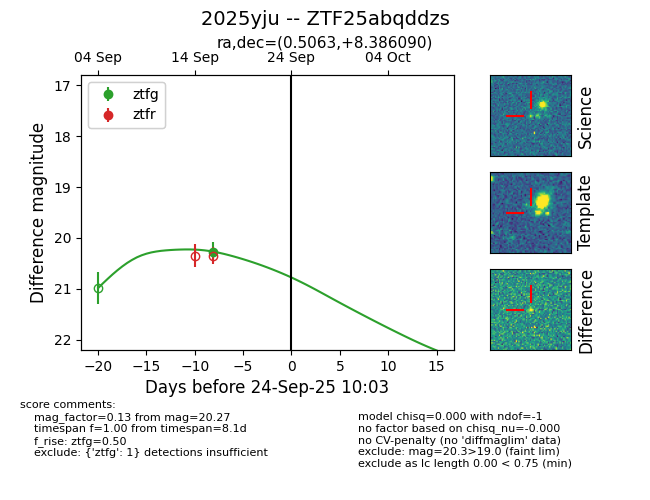
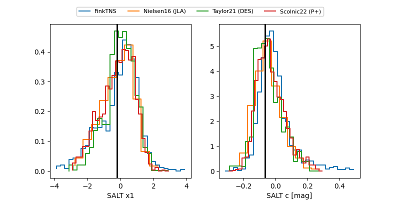

FINK: ZTF25abqddzs
Lasair: ZTF25abqddzs
ALeRCE: ZTF25abqddzs
TNS: 2025yju
YSE: 2025yju
ZTF25abqddzs (ztf,fink)
2025yju (tns,yse)
equatorial (ra, dec) = (0.5063,+8.38609)
galactic (l, b) = (102.5764,-52.52181)


last ztfg=20.27
1 ztfg detections